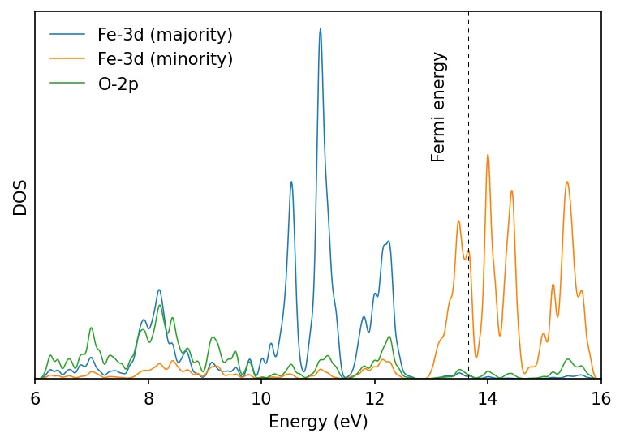
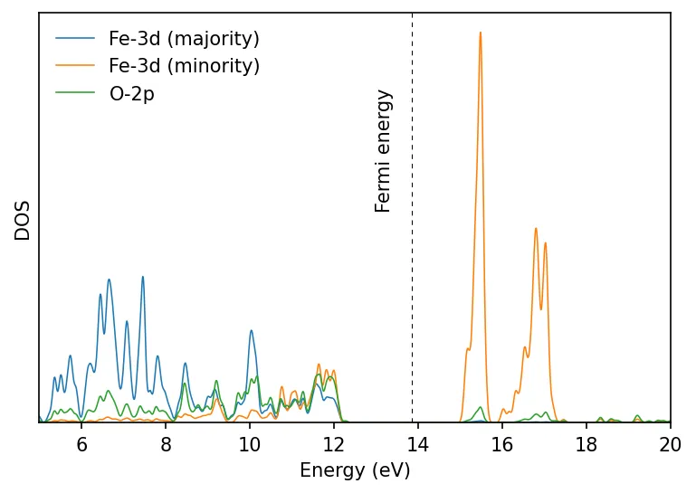

Cálculo DFT+U
A estrutura eletrônica de metais de transição (com elétrons \(d\) ou \(f\) localizados) não é bem descrita pela DFT padrão, daí a necessidade da formulação DFT+U.
&SYSTEM
...
lda_plus_u = .TRUE.
Hubbard_u(i) = 2.0
...
/Aqui, i é o índice atômico no card &ATOMIC_SPECIES correspondente a cada ntyp. Podemos definir Hubbard_u(i) para mais de um átomo, em linhas separadas.
O QE também implementa \(U_{eff} = U - J\). \(J\) representa a interação de troca local. O número de termos \(J\) depende da camada de elétrons localizados: 1 para \(p\), 2 para \(d\) e 3 para \(f\).
...
lda_plus_u = .TRUE.
lda_plus_u_kind = 1
Hubbard_u(i) = U
Hubbard_J(k, i) = J_{ki}
...Se você adicionar Hubbard_u para elementos em que o termo \(U\) não está implementado no QE, pode aparecer o erro "pseudopotential not yet inserted".
Mudanças na sintaxe do input na v7.1
A partir da versão 7.1 do Quantum ESPRESSO, a sintaxe do input para cálculos DFT+U mudou. Na nova versão, em vez de definir os parâmetros de DFT+U nas namelists, há um novo card Hubbard.
&system
...
- lda_plus_u = .true.,
- lda_plus_u_kind = 0,
- U_projection_type = 'atomic',
- Hubbard_U(1) = 4.6
- Hubbard_U(2) = 4.6
...
/
+ HUBBARD (ortho-atomic)
+ U Fe1-3d 4.6
+ U Fe2-3d 4.6Consulte o qe-x.x/Doc/Hubbard_input.pdf para os detalhes.
Cálculo DFT para o FeO
Primeiro faremos o cálculo DFT padrão.
- Faça o cálculo SCF:
pw.x -in feo_scf.in > feo_scf.out- Faça o cálculo NSCF com uma malha de pontos k mais densa:
pw.x -in feo_nscf.in > feo_nscf.out- Faça o cálculo da PDOS:
projwfc.x -in feo_projwfc.in > feo_projwfc.out
Isso nos dá uma densidade de estados metálica. Na prática, o FeO é isolante.
Calculando o U de Hubbard
&inputhp
prefix = 'FeO'
outdir = './tmp/'
nq1 = 1, nq2 = 1, nq3 = 1
/Faça um cálculo de resposta linear com o programa hp.x:
hp.x -in feo_hp.in > feo_hp.outVeja o arquivo FeO.Hubbard_parameters.dat.
-
Precisamos verificar a convergência em relação à malha de q (e à malha de k no cálculo SCF). Aqui é usada uma malha \(1\times 1\times 1\). Importante:
lda_plus_udeve ser.true.durante o cálculo SCF; \(U\) pode ser zero. -
Podemos atualizar o valor de \(U\) obtido no cálculo SCF e repetir o cálculo de resposta linear até atingir a autoconsistência no valor de \(U\).
-
Indo além, é possível verificar a convergência da geometria durante as atualizações de \(U\).
-
Há também a correção de Hubbard entre sítios, o cálculo DFT+U+V. Os resultados podem ficar mais próximos de métodos mais sofisticados, como funcionais híbridos ou GW. O \(V\) também pode ser calculado com o código hp.x do Quantum ESPRESSO.
-
O valor de \(U\) obtido depende do pseudopotencial e da variedade de Hubbard (atomic, ortho-atomic etc.).
Calcular o parâmetro de Hubbard \(U\) autoconsistente envolve um fluxo iterativo que começa com um cálculo autoconsistente (SCF) padrão usando um valor inicial muito pequeno, \(U_{in} \sim 0.001\). Em seguida, a Teoria de Perturbação do Funcional da Densidade (DFPT) é aplicada pelo módulo hp.x para calcular um novo parâmetro de Hubbard de resposta linear, \(U_{out}\). Esse \(U_{out}\) é então usado numa otimização estrutural (relaxação) do cristal. Por fim, compara-se o \(U_{out}\) calculado com o \(U_{in}\) inicial; se convergirem para o mesmo valor, a autoconsistência foi atingida. Se não, o ciclo se repete, levando o novo \(U_{out}\) e os CELL_PARAMETERS atualizados para um novo cálculo SCF, até a convergência. Recomenda-se em geral uma tolerância de convergência de 10 meV/sítio para \(U\).
O código hp.x acima não é adequado para sistemas de camada fechada (por exemplo, elementos com a camada d totalmente ocupada); nesses casos, o método de resposta linear dá valores de \(U\) irrealisticamente grandes.
Cálculo DFT+U
Repetimos o cálculo após definir no card &SYSTEM:
Hubbard_U(1) = 4.6
Hubbard_U(2) = 4.6Repetimos o cálculo acima e fazemos os gráficos. Agora encontramos um estado fundamental isolante.

U_projection_type = 'ortho-atomic' pode dar resultados mais realistas que o padrão 'atomic'.
Num cálculo \(DFT+U\), o estado fundamental pode ficar preso num mínimo local; nesses casos, precisamos fornecer starting_ns_eigenvalue para ajudar o cálculo a chegar ao estado fundamental desejado/real. Veja estes slides do Dr. Iurii Timrov para um exemplo.
Aqui fizemos o gráfico da lpdos (densidade de estados local). Para saber a contribuição de \(d_{z^2}, d_{yz}, d_{x^2-z^2}\) etc., use as colunas pdos. O arquivo feo_projwfc.out também traz informações importantes sobre as cargas de Löwdin.
Recursos
- DFT+U na prática, por Iurii Timrov e Matteo Cococcioni
- Cálculo do parâmetro de Hubbard
- https://sites.psu.edu/jgoffcapstone/overview/
Conteúdo adaptado de DFT+U calculation, do Quantum Espresso Tutorial de Pranab Das, sob licença CC BY 4.0. Alterações: texto traduzido para o português; layout e navegação adaptados.